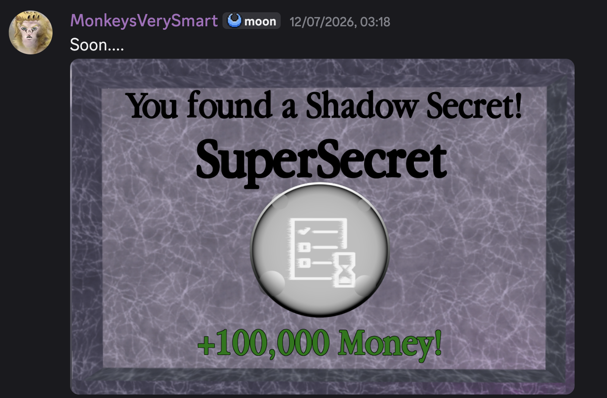

Tycoon Secrets
This game is probably the one im the most proud of as it's the first time I got to majorly contribute in a puzzle game (or game in general) that actually made it on the front page.
I have to thank the original owner, Nil/Cala for letting me work on this game.
If you want the cliffnotes version of what I made for this game:
- Ideas for various puzzles in the greenhouse, city, etc.
- Shadow Secret System + Webhooks
- Haze Expansion
- Various other small contributions
Shadow Secrets
Shadow Secrets were extra secrets that posed as an extra challenge for players to solve after finishing the base secrets. Usually they involved performing a specific method to get the shadow secret rather than inputting a code. They didn't have much effort nor puzzle quality put into them, as they aren't part of the main game, but somehow they were an instant hit. I spent days constantly publishing shadow secrets, but eventually stop at ~60 of them. Not all of them have been found though...

Scorched Earth
wip